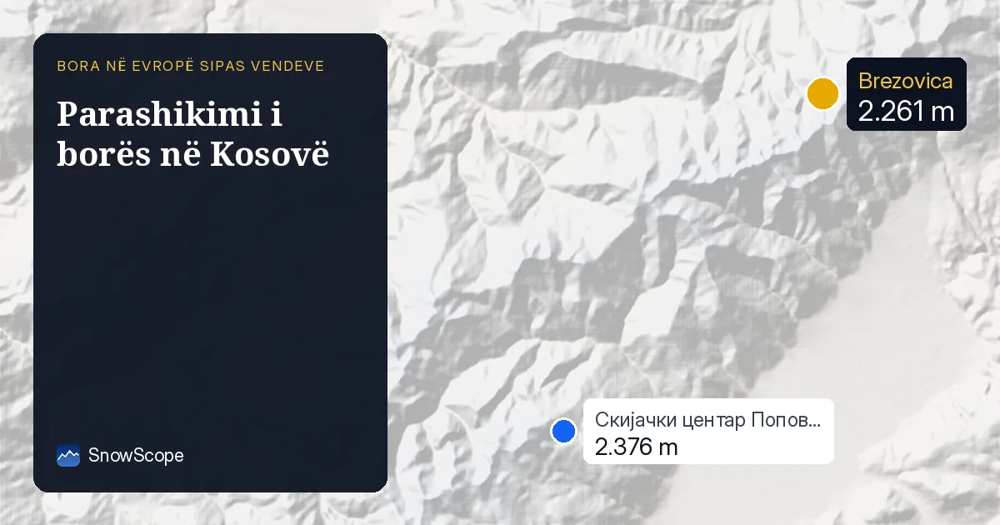

Parashikimi i borës në Kosovë: 65 cm të mundshëm në javën e ardhshme
Brezovica është e vetmja stacion skijimi në Kosovë, dhe bora është në rrugën e vet.
Shihni parashikimin e borës për Brezovica në aplikacionin SnowScopeTrashësia e borës, njoftime dhe harta 3D, falas.
Një ngjarje e madhe boje në ardhje
Një stuhi e rëndë boje po lëviz drejt Kosovës. Kulmi do të vijë më 28 nëntor, kur presim 19 cm në lartësinë e lartë.
Sasia aktuale do të varet nga rruga e saktë e sistemit dhe si do të zhvillohen kushtet.
| Qendra | Trashësia e borës | Borë e re, 72 orë | Ditët në vijim | Maja |
|---|---|---|---|---|
| Brezovica | 0 cm | 7 cm | 16 cm | 2.261 m |

Ku do të bjerë bora
Malet e Mallësisë dhe Malet e Sharrit do të shohin borën më të rëndë. Malet e Mallësisë morën 15 cm në 72 orët e fundit dhe janë në rrugën e sistemit që vjen. Terreni më i lartë mbi 2000 m do të marrë shumicën e borës të re.
Bora në nivelin e stacionit ka qenë e rrallë deri më tani këtë sezon, por ky ngjarje duhet ta ndryshojë atë.
Mbulesa e borës po rritet
Mbulesa e borës në Kosovë ka kërcyer ndjeshta. Kjo është një rritje prej 60 km² në vetëm 24 orë, e nxitur nga sistemi që mbërriti tani.
Bora e hershme shpesh shkrihet shpejt nëse temperaturat rriten. Malet mbi 2000 m mbajnë borën më gjatë.
Çfarë shohim nga satelitët
Bora është e hollë dhe pjesërisht e shpërndarë nën 2000 m.
Në kontrast, trendi gjatë javës së kaluar tregon një rikthim të mprehtë. Mbulesa e borës ra në vetëm 20 km² më 19 nëntor, por u rrit në 130 km² ndërsa sisteme të reja lëvizën. Ngjarja që vjen duhet të mbajë dhe të zgjerojë këtë mbulese.
Kohëzgjatja dhe besimi
Bora do të mbërrijë më 23 nëntor dhe do të intensifikohet gjatë javës. Pas atij ngjarjeje, presim borë më të lehtë ose periudha të thata.
Parashikimet mund të zhvillohen ende, veçanërisht për shumat e sakta dhe kohëzgjatjen. Bora e hershme është gjithashtu e prirur ndaj shkrirjeve të shpejta nëse temperaturat ngriten. Monitoroni parashikimet zyrtare të motit dhe buletinet e ortekave nëse planifikoni të lini terrenin e shënuar.
Shqipëria dhe Maqedonia e Veriut gjithashtu në radhë
Brezovica ndodhet në një koridor boje të ndarë me fqinjët e saj. Stacioni kryesor i Shqipërisë, Ski Pista Bigëll, përballet me deri në 69 cm në 7 ditët e ardhshme. Stacioni kryesor i Maqedonisë së Veriut, Скијачки центар Попова шапка, parashikohet të shohë 47 cm. Të tre vendet janë gati të shohin akumulim të konsiderueshëm.
Këshilla për skiatorët
- Monitoroni parashikimin për 28 nëntor: atëherë bora më e rëndë mbërriti. Planifikoni udhëtimet tuaja në Brezovicë pas asaj date nëse dëshironi borën më të thellë të re.
- Mbi 2000 m është vendi ku bora do të qëndrojë më gjatë dhe do të akumulohet më shpejt. Lartësia më e ulët mund ta shohë të shkriret ose të kthehet në shi.
- Bora e hershme është e hollë dhe shpesh mbulon shkëmbinj. Kontrolloni buletinet e ortekave dhe përdorni kujdes jashtë korridoreve të shënuara derisa baza të forcohet.
- Ky është një parashikim, jo një garantim. Totalet aktuale mund të ndryshojnë nëse rruga e stuhisë zhvendoset ose dobësohet. Ndiqni përditësimet nga shërbimi juaj meteorologjik.
- Përdorni hartën e SnowScope për të gjurmuar thellësinë dhe mbulesen e borës ndërsa sistemi lëviz nëpër të.
About these numbers
Resort snow depths are the deepest snow on the resort's upper slopes on the date shown; they are estimates for an area, not a measurement at one point. Forecasts can change. Always read the official avalanche bulletin before going off-piste.
Cite this report
For research, teaching or the press: the numbers and charts are free to reuse under CC BY 4.0 with this citation.
SnowScope (2026), Parashikimi i borës në Kosovë: 65 cm të mundshëm në javën e ardhshme, https://snowscope.app/blog/sq/2026/11/kosovo-snow-on-the-way-22-november-2026.html, accessed 2026-11-22
SnowScope (Atlas Labs). (2026, November 22). Parashikimi i borës në Kosovë: 65 cm të mundshëm në javën e ardhshme. SnowScope snow reports. https://snowscope.app/blog/sq/2026/11/kosovo-snow-on-the-way-22-november-2026.html
BibTeX
@misc{snowscope2026kosovosnowontheway22nove,
author = {{SnowScope (Atlas Labs)}},
title = {Parashikimi i borës në Kosovë: 65 cm të mundshëm në javën e ardhshme},
year = {2026},
month = nov,
howpublished = {\url{https://snowscope.app/blog/sq/2026/11/kosovo-snow-on-the-way-22-november-2026.html}},
note = {Published 2026-11-22 20:05 UTC; accessed 2026-11-22}
}· CC BY 4.0 · Methods, data and tools →
Brezovica: snow and temperature by height, this winter vs last (tools) →
Follow Brezovica
Falas: një mesazh kur vjen borë e re dhe parashikimi çdo mëngjes.